Softver koji banke zaista koriste.
Obračunajte faktoring po ugovoru, pratite kreditni zahtev do isplate i znajte koji je sledeći korak za svaku prodajnu priliku.

Vaša uloga?
Dva referenta. Jedan limit. Ista sekunda.
Klijentu je ostalo 9.000.000 RSD limita. Dva referenta u istom trenutku unose fakture od 6 i 5 miliona. Svako na svom ekranu vidi da ima mesta. Pokrenite i uporedite šta se dešava u tabeli, a šta u Rythmós-u.
Ako ovo liči na vašu instituciju — znamo tačno gde boli.
Svaki Rythmós proizvod je odgovor na problem koji smo godinama gledali iznutra. Prepoznajte svoj.
„Zahtev je negde između prodaje i rizika — niko ne zna gde."
Rythmós: pipeline po fazama i SLA semafor. Svaki predmet ima status, rok i odgovornog — i broji dane.
„Obračuni žive u Excel tabelama i zavise od jednog čoveka."
Rythmós: kamate, provizije i zatezna kamata obračunavaju se automatski — i regenerišu pri svakoj delimičnoj otplati.
„Menadžment sliku portfolija dobija na kolegijumu, sa zakašnjenjem."
Rythmós: dashboard u realnom vremenu — pipeline, iznosi i prosečno trajanje po statusu, bez ručnih tabela i sastanaka.
„Svaka izmena procesa je IT projekat od tri meseca."
Rythmós: statusi, SLA rokovi, proizvodi i hijerarhija odobravanja su konfiguracija kroz interfejs — ne kod.
„AI bismo koristili, ali podaci ne smeju da napuste banku."
Rythmós: self-hosted modeli na vašoj infrastrukturi. Nijedan podatak ne ide trećoj strani — po arhitekturi, ne po obećanju.
„Procedure detaljno zna troje ljudi. Svi ostali zovu njih."
Rythmós: AI ekspert obučen na vašim internim aktima odgovara svakom zaposlenom za par sekundi — sa citiranjem izvora.
„Ko je poslednji zvao ovu firmu — i šta smo obećali?"
Rythmós: dosije firme sa celom istorijom kontakata, dnevna radna lista za svakog komercijalistu i samo jedno aktivno zaduženje po firmi.
„Dva referenta, jedan limit, ista sekunda."
Rythmós: limiti se proveravaju pod zaključavanjem u trenutku upisa — ne mogu se probiti ni kad dvoje rade istovremeno.
Jedan tim. Kompletan softverski sloj finansijske institucije.
Za banke, lizing i faktoring kuće i druge finansijske institucije. Svaki proizvod je nastao iz stvarnog problema u stvarnoj instituciji — ne iz brainstorminga u kancelariji.
- Web forma za SEF fakture
- 3 konvencije kamate
- Okvirne linije i limiti
- Regres
- NBS kursna lista
- Partnerski API
- Audit log
- Bez servera
- Windows prijava
- Kartica po službi
- Tok predmeta
- Odluka u Wordu · izveštaj u Excelu
- Registar firmi
- Kampanje
- Radna lista
- Prodajni pipeline
- Ponderisana vrednost
- Izveštaji u Excelu
- Za svaku B2B delatnost
- Bez vezivanja za core
- SLA po statusu
- Kampanje
- Pipeline po fazama
- Hijerarhija odobravanja
- Audit log
- Za RM-ove, ne potrošače
- Pravila banke kao konfiguracija
- Amortizacija
- Self-hosted LLM
- Multi-tenant
- RAG
- Anuitet
- Rate
- Faktoring
Sve što faktoring kuća zahteva. Uključujući ono što konkurencija preskače.
Sistem ne pokriva samo srećan put. Pokriva kašnjenja, delimične uplate, regres, dvoje ljudi na istom limitu i pitanja revizora — tamo gde se softver zapravo dokazuje. I počinje ranije od većine: od fakture koju vam klijent pošalje.
PregledCeo portfolio — pre prve kafe
Šta je prošlo rok, šta dospeva u narednih 7 dana i koliko kamate čeka naplatu — na vrhu ekrana, sa linkom ka tačnom spisku. Plasmani i primljene pozajmice po valutama, sve preračunato u dinare po dnevnom kursu NBS.
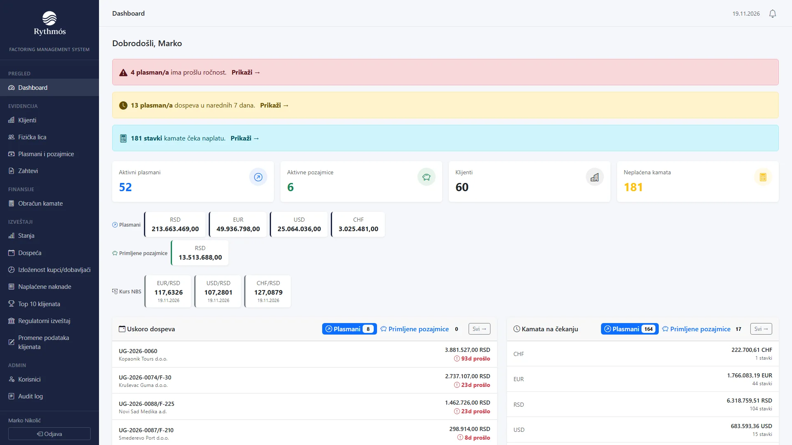

Interaktivno · 8 korakaŽivot jedne fakture
Od PDF-a koji klijent pošalje do poslednjeg dinara — ili do regresa. Kliknite korak i vidite šta sistem radi u tom trenutku, i šta ne dozvoljava da se desi.
Klijent prevuče SEF fakture. Niko ništa ne prekucava.
- Link po klijentu, zaštićen PIN-om — formu otvara supervizor ili administrator
- Sistem iz PDF-a čita broj, iznos, valutu, datum izdavanja i dospeće
- Proverava status fakture na javnom SEF pregledu
- Odbija fakturu koju je već jednom primio
- Zaposleni dobijaju obaveštenje u aplikaciji ili mejlom — svako bira kanal
Ništa se ne finansira bez zapisane odluke.
- Svaki zahtev ima status: primljen, odobren, odbijen, odustao — i zapis ko je odlučio
- Tek odobren zahtev otvara plasman, popunjen podacima iz zahteva
- Zahtev ne može da se iskoristi dvaput — ni kad dvoje kliknu u istom trenutku
- KYC klijenta se ponovo proverava u trenutku upisa, ne samo kad je forma otvorena
Limite čuva sistem, ne tabela.
- Faktoring sa regresom, bez regresa i obrnuti — sa fakturama vezanim za ugovor
- Okvirne linije sa tranšama i živim prikazom „iskorišćeno / raspoloživo”
- Krovni iznos ugovora, limit finansiranja klijenta i lista odobrenih kupaca
- Limiti se proveravaju u trenutku upisa, pod zaključavanjem — dva referenta ne mogu zajedno da probiju isti limit
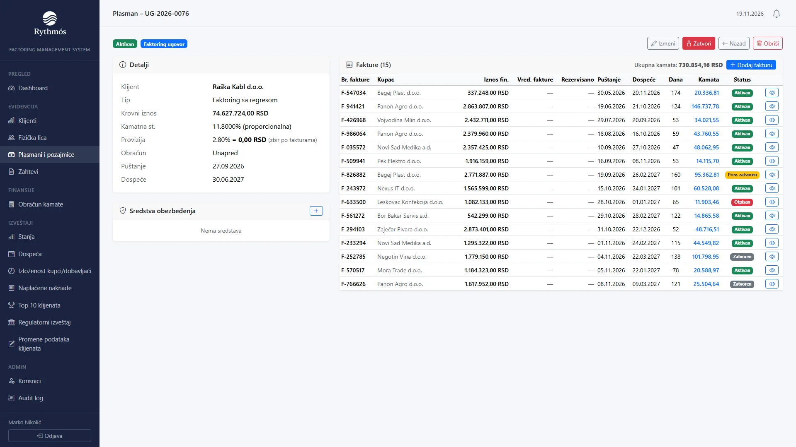
Obračuni koje niko ne kuca ručno.
- Unapred, mesečno, kvartalno, na N meseci ili na dan dospeća — generišu se sami
- Konvencija dana kao podešavanje: kalendarski, stvarni dani/360 ili ACT/365 (probajte ispod)
- Naknada procentualno, fiksno ili po danu — na iznos finansiranja ili vrednost fakture
- Svaki period je zaseban zapis koji se proverava do na dan i decimalu

Klijent plati deo ranije. Obračun se sam prepiše.
- Period se deli na dan otplate — pre na staru glavnicu, posle na novu
- Budući obračuni se regenerišu; naplaćeni i stornirani periodi se nikad ne diraju
- Kad je novac jednom krenuo, datum puštanja je zaključan — istorija se ne prepravlja unazad
- Nalog za prenos na zvaničnom obrascu, spreman za štampu
Kašnjenje je vidljivo — i obračunato — od prvog dana.
- Zatezna kamata se obračunava automatski, po istoj konvenciji kao redovna
- Dashboard upozorava: prošla ročnost, dospeće u narednih 7 dana, kamata koja čeka naplatu
- Izveštaj o dospećima pokazuje dane do roka — ili dane kašnjenja — za svaku fakturu

Kupac nije platio. Potraživanje prelazi na ustupioca.
- Regres evidentira nenaplaćenu glavnicu i već obračunatu kamatu, na dan aktiviranja
- Uplate se knjiže na regres, a ono što se ne može naplatiti — otpisuje
- Najviše jedan otvoren regres po plasmanu — nema duplog potraživanja prema istom klijentu
- Nema uplate na otpisan regres, ni uplate pre datuma aktiviranja
Zatvoreno — ali nikad zaboravljeno.
- Zatvoren, prevremeno zatvoren, otpisan ili restrukturiran — svaka promena ide u istoriju statusa
- Zatvaranje ugovora proverava i svaku aktivnu fakturu ispod njega
- Stanje portfolija za bilo koji dan unazad, rekonstruisano iz istorije — za regulatora, revizora i upravu
Uživo · probajteIsta faktura. Tri ugovora. Tri različita iznosa.
Banke kamatu na faktoring kotiraju na različite načine — i za istu nominalnu stopu ne naplaćuju isto. Sistem podržava sve tri konvencije koje se sreću u ugovorima u Srbiji, proverene na stvarnim bankarskim kamatnim listovima do na paru. Promenite datume i gledajte razliku.
Podrazumevani primer: 1 dan u martu + 29 dana u aprilu. Tačno 30 dana — ali ne pun kalendarski mesec.
Granični slučajeviKad nešto krene naopako — a hoće
Demo uvek pokazuje srećan put. Ovo su situacije koje faktoring kuća zaista proživljava — i šta sistem radi u svakoj od njih.
„Dva referenta u istoj sekundi odobravaju fakture na isti limit.”
Limit se proverava pod zaključavanjem, u samom upisu. Drugi dobija jasnu poruku — limit nikad nije probijen.
„Dvoje menjaju isti ugovor u isto vreme.”
Druga izmena ne pregazi prvu bez traga. Korisnik vidi da je zapis u međuvremenu promenjen.
„Klijent pošalje istu fakturu dva puta.”
Web forma je prepozna i odbije pre nego što uopšte postane zahtev.
„Ugovor se menja posle naplate dela kamate.”
Naplaćeni i ručno stornirani periodi su konačni. Ponovo se računaju samo dani koje još niko nije pokrio.
„Neko želi da pomeri datum puštanja — posle uplate.”
Nije dozvoljeno. Posle prvog novčanog događaja datum puštanja je zaključan, a nijedna otplata ne može biti datirana pre njega.
„Plasman je obrisan greškom.”
Brisanje je meko i traži razlog. Administrator vraća plasman zajedno sa fakturama i obračunima — jednim potezom.
„Revizor pita ko je šta promenio i kada.”
Svaka izmena je u audit logu: ko, kada, staro → novo. Evidentirana je i svaka prijava, a uloga revizora je samo za čitanje.
„Koliko je bio portfolio 30. juna?”
Stanje na bilo koji dan unazad, rekonstruisano iz datuma puštanja, istorije statusa i promena glavnice — ne iz današnjeg stanja.
„Klijentu je istekao KYC između otvaranja forme i klika na Sačuvaj.”
KYC se ponovo proverava u trenutku upisa — ne samo na ekranu koji je referent otvorio pre deset minuta.
EkraniPogledajte sistem — ne slajd
Pravi ekrani aplikacije, na demo podacima. Kliknite ekran da ga uvećate.
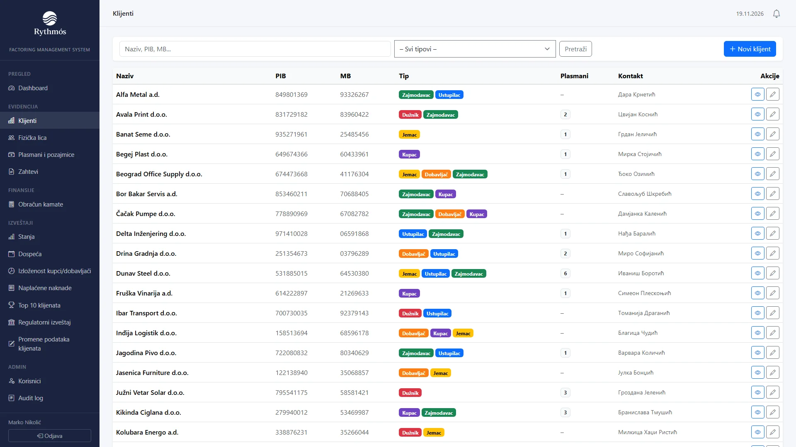

Sve ostaloOstatak alata
Manje spektakularno, jednako važno — ono što faktoring kuća koristi svakog dana.
Evidencija
- Pravna i fizička lica, vlasnici i suvlasnici
- Sredstva obezbeđenja: menice, hipoteke, zaloge
- Šifarnik delatnosti po KD 2025
- Primljene pozajmice pravnih i fizičkih lica
Izveštaji
- Stanja i dospeća po periodu
- Izloženost po kupcu i dobavljaču
- Naplaćene naknade · top 10 klijenata
- Promene registracionih podataka klijenata
- Regulatorni anketni upitnik, izvoz u Excel
Integracije
- SEF fakture kroz web formu
- Dnevna kursna lista NBS
- Partnerski REST API samo za čitanje, sa OpenAPI dokumentacijom — ključ i dozvole po partneru, podrazumevano isključen
- Izvoz u CSV i Excel
Kontrola
- Uloge: referent, supervizor, administrator, revizor
- Audit log svake izmene
- Evidencija prijava i odjava zbog neaktivnosti
- Meko brisanje sa razlogom i vraćanjem
Kvalitet
- 890+ automatskih testova i E2E test celog toka
- Nezavisna provera koda pre svakog puštanja
- Penetracioni test
- Rezervna kopija baze iz admin panela
Operativa
- Obaveštenja u aplikaciji ili mejlom
- Nalog za prenos na zvaničnom obrascu
- Instalacija u cloudu ili on-premise
- Interfejs na srpskom i engleskom
Spreman za centralnu evidenciju faktoringa. Izmene Zakona o faktoringu („Sl. glasnik RS” 109/2025) uvode centralnu evidenciju u koju se ustupljene e-fakture registruju najkasnije narednog radnog dana, a nadzor prelazi na Komisiju za hartije od vrednosti. Sistem koji fakture već prima elektronski tu obavezu pretvara u automatizam — regulatorni izveštaj prati zvanični obrazac čim ga podzakonski akti propišu.
Kreditni proces bez IT projekta.
Od prijema zahteva do isplate — u jednoj aplikaciji, umesto u mejlovima i tabelama. Za institucije koje red u procesu žele ovog meseca, a ne posle tendera. Korišćen u bankama i lizing kući u Srbiji i Severnoj Makedoniji.
- Eurobank AD Beograd
- Eurobank Direktna AD Beograd
- ALTA Banka AD Beograd
- ALTA Leasing doo Beograd
- ALTA Banka AD Bitola
- 1Prodaja
- 2Analiza
- 3Obezbeđenje
- 4Risk
- 5Administracija
- 6Isplaćeno
Bez servera. Bez projekta.
Radi na Microsoft Accessu, u vašoj mreži, uz prijavu Windows nalogom. Podaci ostaju kod vas.
Svaka služba ima svoju karticu.
Predmet se otvara tamo gde trenutno jeste — na kartici službe koja je na potezu.
„Gde je predmet?”
Tok predmeta beleži svaki korak: datum, vreme, službu i status. Odgovor je na ekranu, ne u mejlu.
Status ne menja ko stigne.
Sledeći korak bira samo služba koja je na potezu. Isplata traži potvrdu i tačan datum isplate. Posle isplate predmet se više ne menja.
Odluka u Wordu. Izveštaj u Excelu.
Kreditna odluka iz vašeg šablona i izveštaji za period — uključujući koliko obrada zahteva zaista traje.
Najlakše je videti na delu.
Zakažite demo i pogledajte sistem na primerima iz vaše prakse.
Ko zove koju firmu, šta je sledeći korak i koliko vredi otvorena prodaja?
Registar firmi, kampanje, dnevna radna lista i prodajni pipeline — u jednom sistemu. Komercijalista zna koga danas zove i šta je prošli put dogovoreno. Menadžer vidi ko je zadužen za koju firmu i gde obrada stoji. Uprava vidi šta je dobijeno, šta je još otvoreno i šta je donela svaka kampanja.
Nastao u bankarstvu. Radi za svakoga ko prodaje firmama.
Rythmós CRM je projektovan za prodajne timove banaka, lizing i faktoring kuća — ali je u osnovi sistem za B2B prodaju: registar pravnih lica, kampanje, istorija kontakata i pipeline. Proizvodi su šifarnik koji sami definišete — kredit, softverska licenca, ugovor o održavanju, polisa osiguranja, ugovor o distribuciji — bez ijedne linije koda. Ako su vaši klijenti firme, sistem vam odgovara.
- Banke
- Lizing
- Faktoring
- Osiguranje
- IT i softver
- Telekomunikacije
- Veleprodaja i distribucija
- Proizvodnja za firme
- Energetika
- Logistika i transport
- Konsalting i revizija
- Agencije i poslovne usluge
PregledJutro menadžera prodaje, na jednom ekranu
Pozivi i sastanci ove nedelje, otvoreni dogovori i probijeni rokovi, šta je dobijeno u kvartalu i stanje svake firme u aktivnoj kampanji. Desno — šta zahteva pažnju: prilike bez sledećeg koraka, probijeni rokovi, nedodeljene firme i firme bez nadležnog zaposlenog.
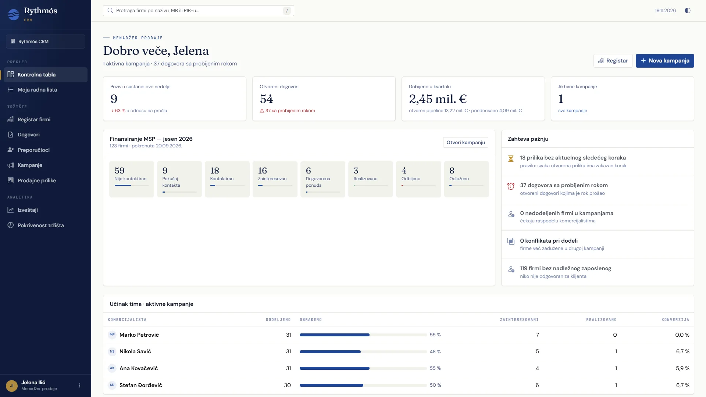
Interaktivno · 6 korakaOd firme u registru do potpisanog posla
Kliknite korak i vidite šta sistem radi u tom trenutku — i šta ne dozvoljava da se desi.
Tržište na jednoj listi — ne u deset tabela.
- Pretraga po nazivu, matičnom broju ili PIB-u — naziv i bez dijakritika
- Filteri: veličina, opština, delatnost, prihod, pravni status, preporuka, nadležni zaposleni
- Matični broj i PIB provereni pri unosu — nema duplih firmi
- Svaka izmena ide u istoriju firme; ugašene firme se arhiviraju sa razlogom, ne nestaju
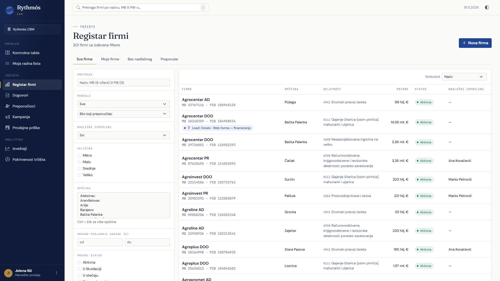
Ciljna grupa u nekoliko klikova — zamrznuta pri pokretanju.
- Ciljna grupa iz istih filtera kao registar, uz izuzimanje firmi kontaktiranih skoro
- Spisak se zamrzava pri pokretanju — kasnije promene u registru ne menjaju obuhvat
- Masovna dodela ili automatska raspodela po timu
- Status svake firme i učinak svakog komercijaliste, uživo
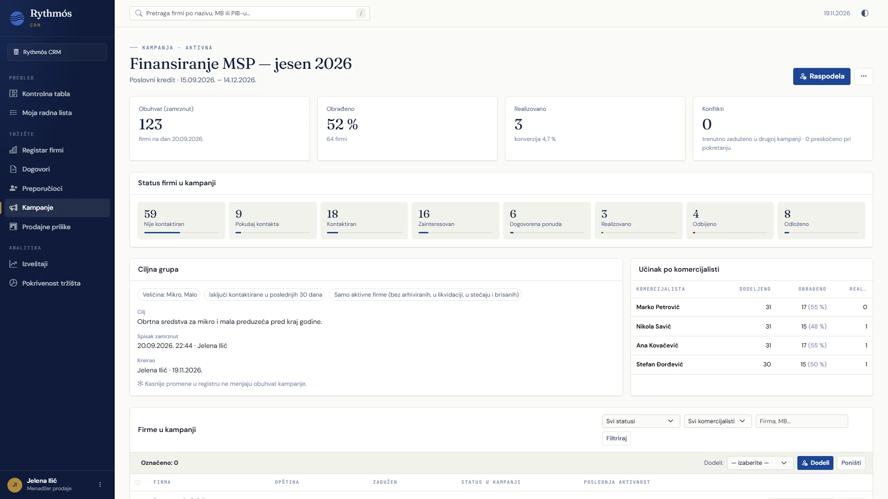
Komercijalista otvori jedan ekran i počne da zove.
- Redosled: zakazani kontakti, pa nikad kontaktirane, pa najduže bez kontakta
- Kontakti sa brojem telefona na jedan klik
- Ishod jednim tasterom — status u kampanji se ažurira sam
- Odložen kontakt se vraća na listu na zakazani dan
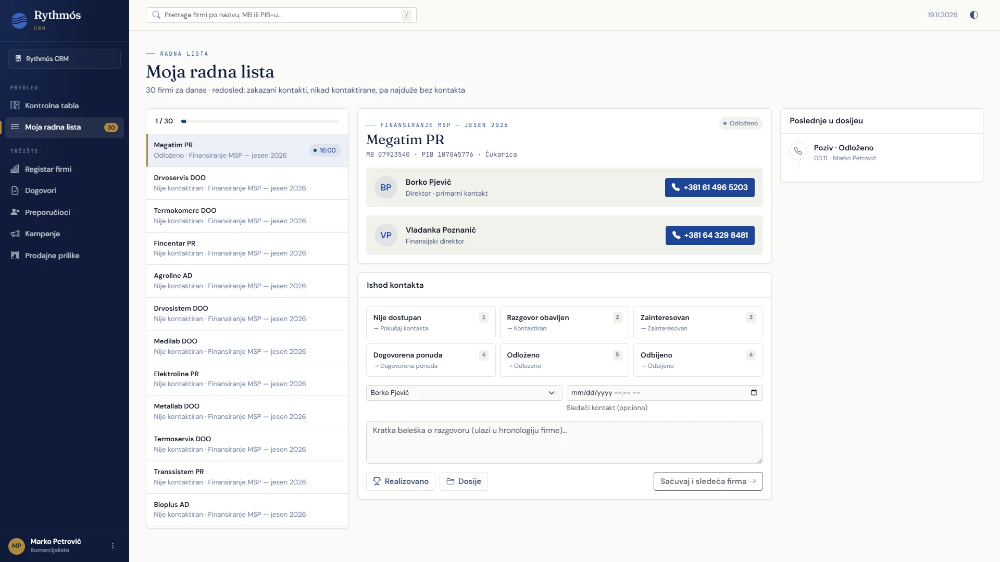
Pre poziva: ko je razgovarao sa njima i šta je obećano.
- Hronologija poziva, sastanaka, mejlova, beleški i izmena
- Dogovori sa tačno jednim odgovornim licem, rokom i statusom — probijen rok se vidi
- Poreklo: ko je firmu preporučio ili odakle je stigao upit
- Kontakti, kampanje i prilike te firme na jednom mestu
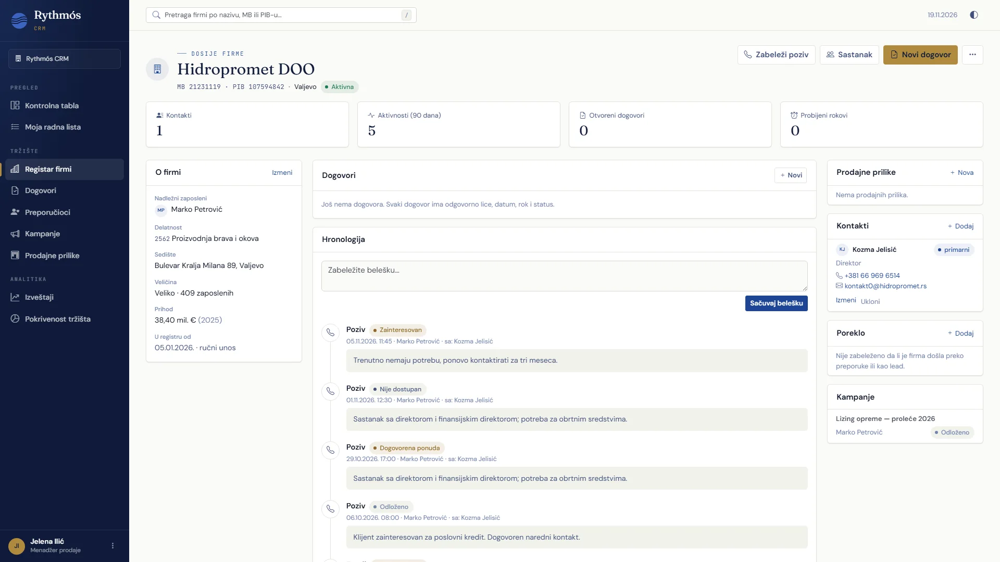
Pipeline koji ne laže.
- Kvalifikacija → potreba utvrđena → ponuda poslata → pregovori → dobijeno ili izgubljeno
- Svaka otvorena prilika mora imati sledeći korak i termin — zakasneli su crveni
- Nominalna i ponderisana vrednost pipeline-a
- Izgubljen posao traži razlog — da znate zašto gubite
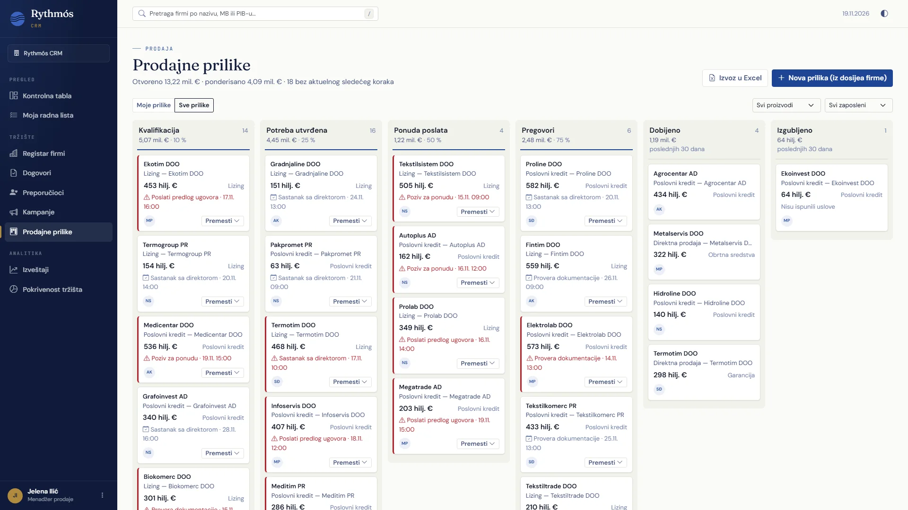
Dobijeno — i kampanja to već zna.
- Dobijena prilika označava firmu kao „realizovano” u kampanji i oslobađa zaduženje
- Pokrivenost tržišta: koliko je kontaktirano, koliko je u pipeline-u, koliko je postalo klijent
- Rezultati po kampanji, timu, proizvodu, regionu i preporučiocu — izvoz u Excel
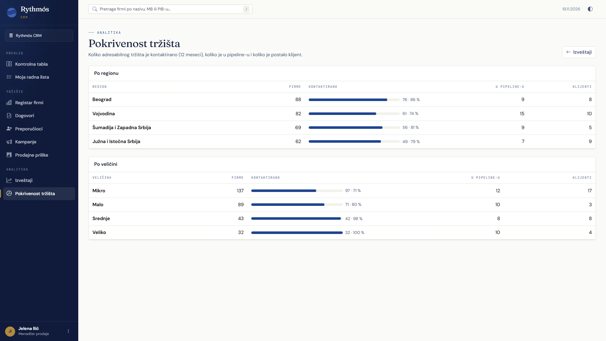
UlogeJedan sistem. Svako vidi tačno ono što mu treba.
Svaka uloga ima svoj početni ekran i svoja prava. Uprava vidi rezultate, ne dosijee klijenata. Komercijalista vidi svoje firme — ili firme celog tima, ako tako odlučite.
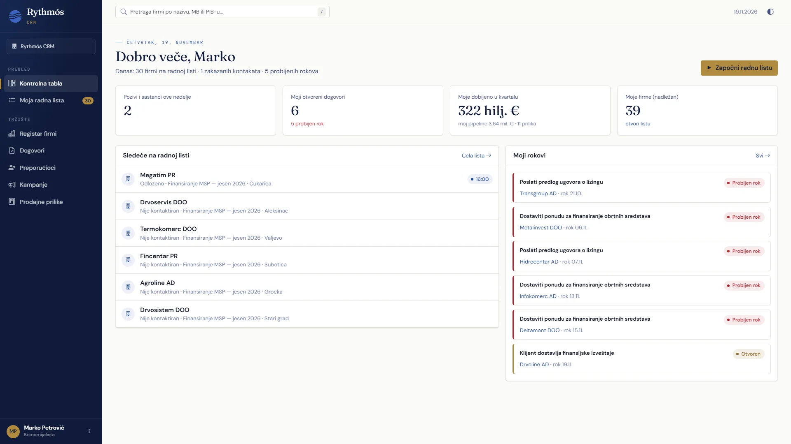
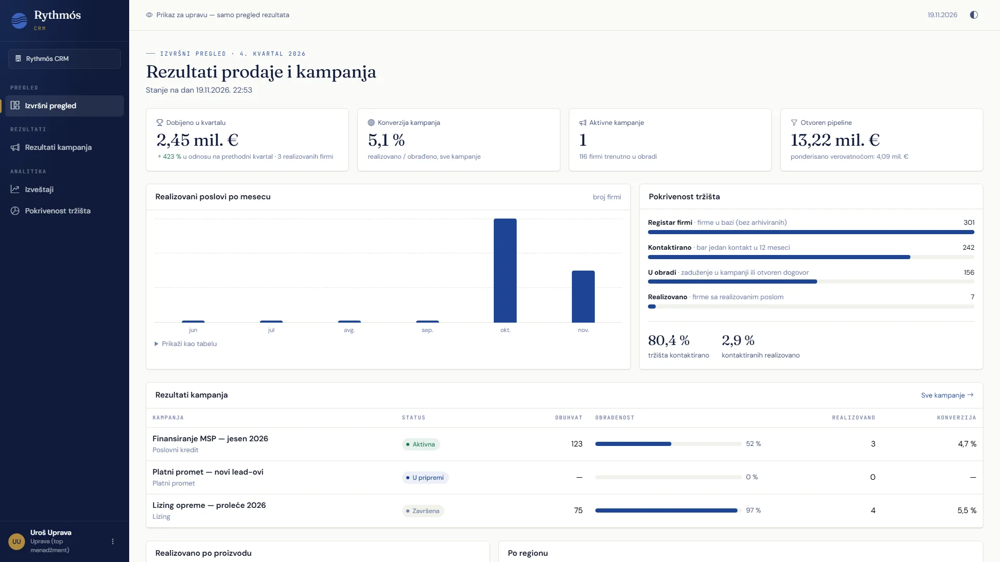
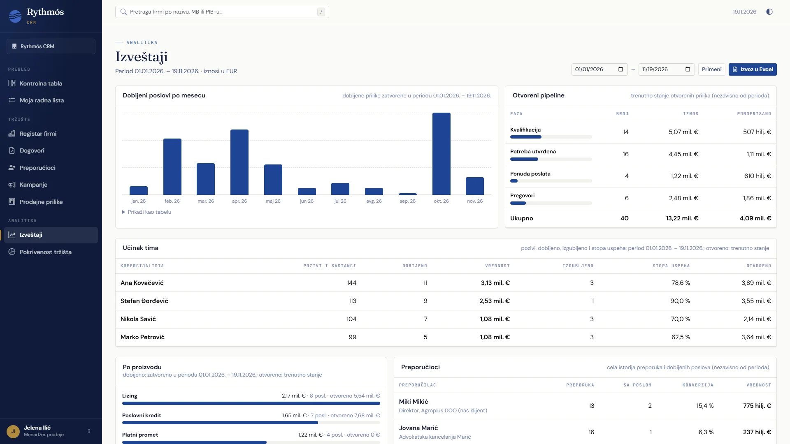
Granični slučajeviOno što tabele i većina CRM-ova propuste
Svaki prodajni tim je bar jednom ovo doživeo. U Rythmós CRM-u ne može da se desi.
„Dve kampanje hoće istu firmu.”
Samo jedno aktivno zaduženje po firmi — garantuje ga sama baza. Da li se preklapanje kampanja zabranjuje ili samo označava, stvar je podešavanja.
„Dva menadžera u istoj sekundi dodeljuju istu firmu.”
Prva dodela prolazi, druga dobija jasnu poruku. Dva komercijalista nikad ne zovu istog klijenta.
„Komercijalista napušta firmu.”
Deaktivacija naloga u istom potezu oslobađa sva njegova zaduženja i prekida sesiju. Ništa ne ostaje zaglavljeno kod nekoga ko je otišao.
„Registar se promenio posle pokretanja kampanje.”
Spisak je zamrznut pri pokretanju. Rezultat se meri prema onome što je zaista bilo cilj.
„Prilika mesecima stoji u pipeline-u i ništa se ne dešava.”
Ne može: svaka otvorena prilika ima sledeći korak i termin. Bez toga se ne čuva — a zakasnele se vide na ekranu menadžera.
„Komercijalista vidi klijente koji nisu njegovi.”
Vidljivost je podešavanje: sve firme, firme tima ili samo dodeljene. Važi za svaku listu — a izveštaji komercijalistima nisu dostupni.
„Dvoje menjaju istu firmu u isto vreme.”
Druga izmena ne pregazi prvu bez traga — korisnik vidi da je zapis u međuvremenu promenjen.
„Firma je otišla u stečaj — a i dalje je u kampanji.”
Firme u likvidaciji, stečaju ili arhivi ne ulaze u kampanje. Njihova istorija ostaje.
„Uprava hoće brojke — ne pristup podacima klijenata.”
Uloga uprave vidi rezultate i kampanje, ali ne i registar, dosijee ni radnu listu.
Sve ostaloOstatak alata
Ono što prodajni tim koristi svakog dana — i ono što IT pita pre nego što kaže da.
Registar
- Pravna lica sa matičnim brojem, PIB-om, delatnošću, veličinom i prihodom
- Šifarnik delatnosti po KD 2025, opštine i regioni
- Timovi i nadležni zaposleni po firmi
- Istorija svake izmene
Odnosi
- Kontakti sa primarnom osobom
- Pozivi, sastanci, mejlovi i beleške
- Dogovori sa rokom i odgovornim licem
- Preporučioci i izvori upita, sa konverzijom
Prodaja
- Kampanje sa zamrznutim spiskom
- Masovna dodela i raspodela timu
- Kanban pipeline sa verovatnoćom
- Šifarnik proizvoda koji sami definišete
Analitika
- Dobijeni poslovi po mesecu, proizvodu i regionu
- Učinak tima i stopa uspeha
- Pokrivenost tržišta
- Izvoz u Excel
Kontrola
- Uloge: administrator, uprava, menadžer prodaje, komercijalista, analitičar
- Vidljivost firmi kao podešavanje
- Deaktiviran nalog odmah gubi pristup
- Nema javne registracije — naloge pravi administrator
Platforma
- Posebna instanca i baza za svakog klijenta
- Naziv i logo vaše kompanije
- Sopstveni mejl server (SMTP)
- Svetli i tamni režim · 190+ testova · nezavisna provera koda
Kreditni proces banke — vidljiv, izmeren i pod kontrolom.
Ovo su ekrani sistema u pripremi: od kampanje i prijema zahteva, preko analize i rizika, do isplate — sa SLA rokom na svakom koraku. Nastao kao naslednik internog alata koji godinama vodi kreditni proces u bankama u Srbiji.
PregledDashboard koji kaže ko kasni — pre nego što klijent pita
Pipeline po fazama sa iznosima, SLA semafor sa predmetima koji probijaju rok i lista „čeka moju akciju" za svakog korisnika. Direktor vidi celu banku, referent vidi svoj posao.
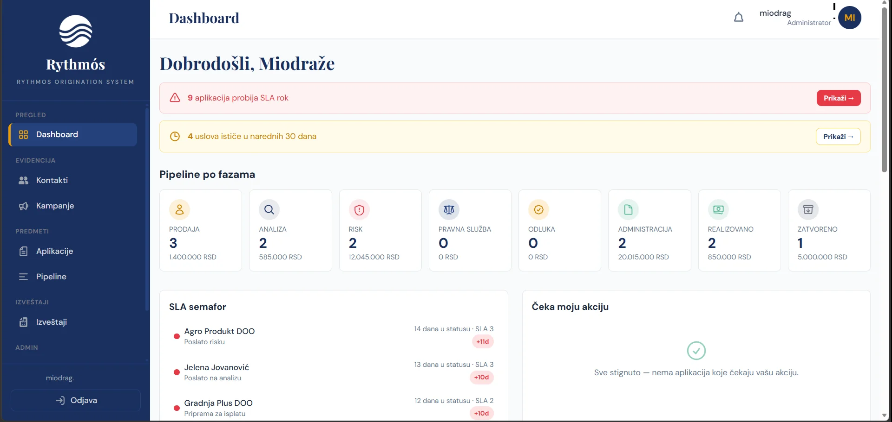
ProdajaKampanje sa targetima po prodavcu
Zanavljanje gotovinskih kredita, akvizicija malih i srednjih preduzeća — svaka kampanja ima period, targetiranje, dodeljene prodavce i merenje ostvarenja targeta u realnom vremenu.
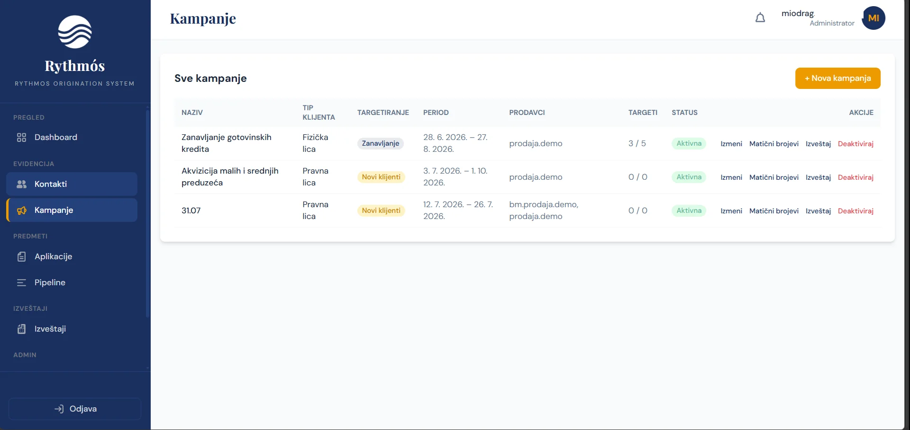
PredmetiSvaki zahtev, svaki status, svaki dan kašnjenja
Registar aplikacija sa brojem predmeta, proizvodom, iznosom i valutom, statusom i brojačem „dana u statusu naspram SLA". Pretraga po klijentu, matičnom broju ili PIB-u. Export u Excel jednim klikom.
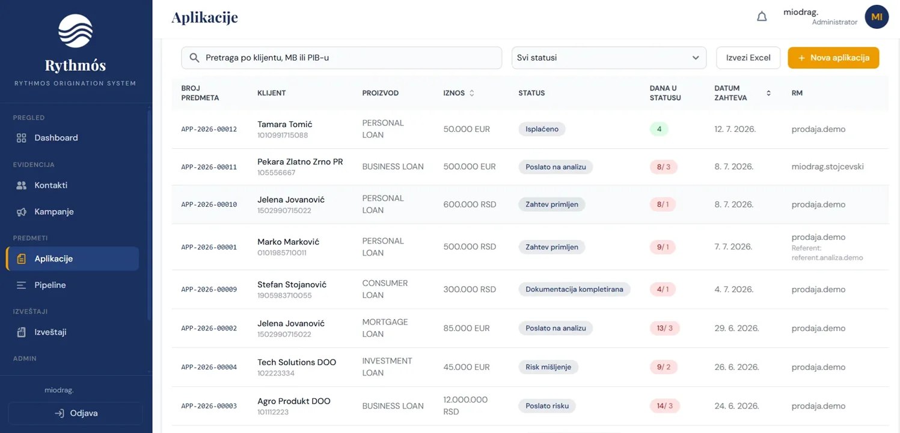
IzveštavanjePipeline po statusu, sa prosečnim trajanjem
Broj predmeta, zbir iznosa i prosek dana u svakom statusu — za izabrani period. Menadžment vidi gde proces zastaje, bez sastanka i bez ručnih tabela.
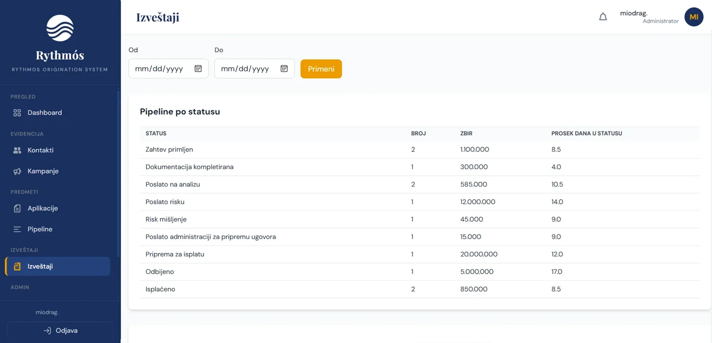
KonfiguracijaWorkflow je podešavanje, ne programiranje
Statusi procesa sa SLA rokom u danima definišu se kroz interfejs — banka menja proces bez ijedne linije koda. Isto važi za katalog proizvoda, valute, korisnike i hijerarhiju odobravanja.
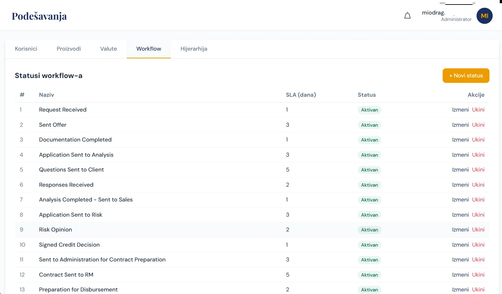
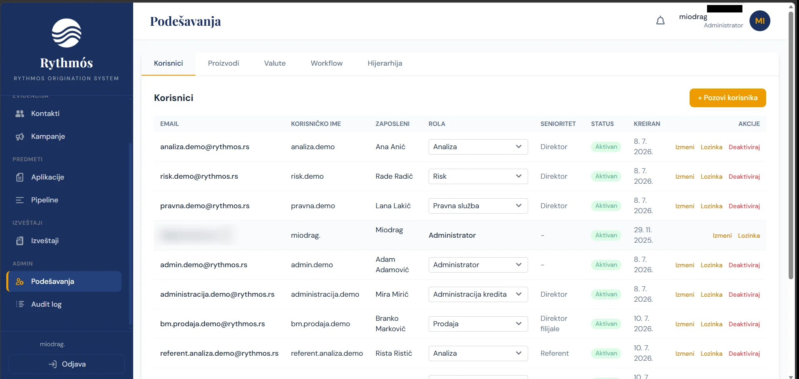
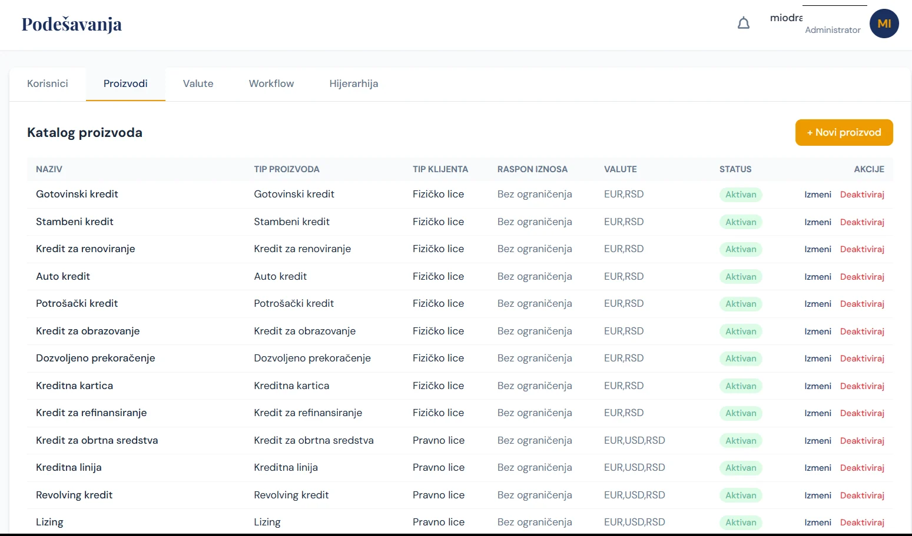
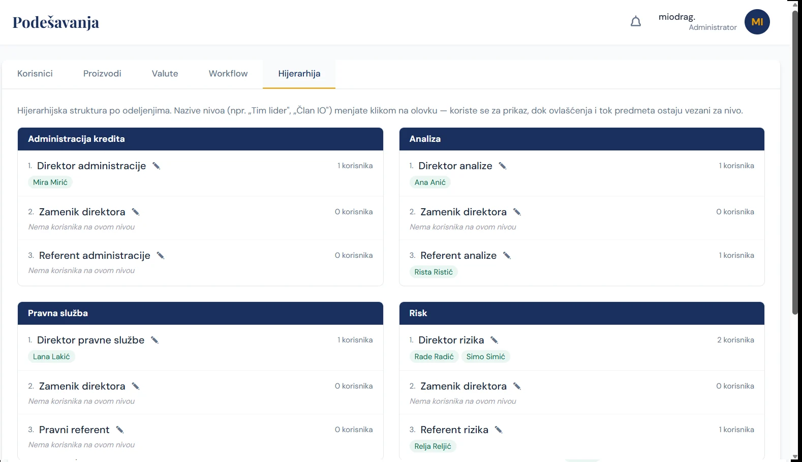
Kreditni odborMaterijal za odbor se piše sam
Paket za kreditni odbor generiše se iz podataka koji su već u sistemu — zahteva, analize, sredstava obezbeđenja i istorije odlučivanja. Bez prepisivanja iz dokumenta u dokument i bez verzije poslate mejlom.
IntegracijeSamostalan po dizajnu — povezan kad banka to odluči
Sistem radi bez vezivanja za core: banka kreće odmah, bez skupog integracionog projekta. Core sistem, Kreditni biro ili elektronski potpis povezuju se naknadno kroz API sloj, sa pristupnim nalozima banke. Integracija je izbor, ne preduslov.
Finansijski kalkulatori
Anuitetni kredit, kredit na rate ili faktoring — izaberite obračun, pomerite parametre, rezultat se izvršava odmah.
Jednak anuitet svakog meseca — odnos glavnice i kamate se menja kroz vreme. Informativni obračun.
Rata opada iz meseca u mesec — kamata se obračunava na ostatak duga. Informativni obračun.
Pretpostavka: provizija i kamata se naplaćuju iz rezerve (iznos fakture umanjen za avans) kada se faktura naplati. Ako trošak premaši rezervu, manjak je prikazan posebno. Informativni obračun — konačni uslovi zavise od parametara vaše institucije, koji se u sistemu podešavaju kao konfiguracija, ne kao kod.
Domen znamo iznutra.
Bankarska ekspertiza
Kreditni proces, faktoring, obračuni i regulativa nisu nam koncepti iz specifikacije — to su procesi koje smo godinama vodili u banci.
Brzina malog tima
Tri osobe, direktna komunikacija, bez slojeva projektnih menadžera. Od zahteva do isporuke merimo se nedeljama, ne kvartalima.
Podaci ostaju kod vas
On-premise ili u vašem cloudu. AI komponente rade na self-hosted modelima — nijedan podatak klijenta ne napušta vašu infrastrukturu.
Kontinuitet po ugovoru
Ugovorni rokovi odziva, obuka i dokumentacija, uz source code escrow po dogovoru. On-premise sistem radi i nezavisno od nas — a kad zatreba, neko odgovara na telefon.
Troje ljudi. Ceo softverski ciklus.
Bez posrednika, bez projektnih slojeva — ljudi koji pišu kod i ljudi koji znaju bankarstvo sede za istim stolom.
Dva senior full-stack inženjera
Diplomirani inženjeri Beogradskog univerziteta, svaki sa preko 10 godina iskustva u izgradnji produkcionih sistema — od baze do interfejsa, od arhitekture do isporuke.
Ekonomista iz bankarstva
Ekonomista Beogradskog univerziteta sa preko 15 godina u bankarskom sektoru — u kreditnim procesima, analitici i izveštavanju koje ovaj softver digitalizuje. Domen ne učimo iz specifikacije.
AI koji ostaje u kući.
Modeli rade na vašoj infrastrukturi, podaci klijenata je ne napuštaju. LLM razume jezik. Deterministički kod izvršava upise, pravila i odluke. Tako se AI koristi u finansijama — bez improvizacije.
AI ekspert za internu podršku zaposlenima
Pitajte procedure, ne kolege.
Obučen isključivo na dokumentaciji vaše banke. Umesto pretraživanja velikog broja dokumenata, zaposleni postavi pitanje i za nekoliko sekundi dobija precizan odgovor zasnovan na važećim pravilima — sa citiranjem izvora, bez halucinacija van dokumenata. Bez podataka klijenata i bez dodira sa kreditnim odlukama — najbrži i najbezbedniji prvi korak banke u AI.
Obučava se na vašim internim aktima
- pravilnici i procedure
- tarifnici
- proizvodi i usluge
- interna uputstva
- česta pitanja zaposlenih
- smernice sektora rizika
AI finansijski savetnik za prodajne timove
Preporuka koja ume da se objasni.
Nije zamena za savetnika — njegova inteligentna podrška. Deterministički engine proverava podobnost klijenta po pravilima banke i smernicama sektora rizika, a AI sloj predlaže optimalan model finansiranja ili štednje za konkretnog klijenta. Pravila su konfiguracija svake banke — ne hardkodovana logika.
Kompletna finansijska slika klijenta
- prihodi i redovne mesečne obaveze
- postojeća zaduženja
- štednja i raspoloživa likvidnost
- vanredni i periodični troškovi
- planirane investicije
- finansijski ciljevi klijenta
Svaki agent je samostalan proizvod — uvode se pojedinačno, nezavisno jedan od drugog, a najviše daju u paru.
Svaki zaposleni raspolaže znanjem najboljih stručnjaka iz prodaje, rizika i razvoja proizvoda — dosledno u celoj mreži, nezavisno od nivoa iskustva.
Manje različitih tumačenja procedura, brže donošenje odluka i veća verovatnoća uspešne prodaje.
Zaposleni manje vremena troše na administraciju i pretraživanje interne dokumentacije, a više na razgovor sa klijentom.
Radionica za razvoj proizvoda. Uz saradnju dolazi i radionica sa vašim timom za razvoj proizvoda: dva razrađena koncepta retail proizvoda — kreditni koji unapređuje korisničko iskustvo i konkurentnost banke, i depozitni koji jača depozitni portfolio i lojalnost klijenata.
Self-hosted po dizajnu. Modeli rade na infrastrukturi pod vašom kontrolom. Za GDPR i bankarsku tajnu to nije marketinška fraza — to je arhitektonska odluka od prvog dana.
Pilot: šest nedelja, vaši tarifnici, merljiv rezultat.
Interni AI asistent na izabranom skupu vaših procedura i tarifnika. Zaposleni postavljaju stvarna pitanja, uspeh merimo tačnošću odgovora — pa tek onda razgovaramo o kupovini.
Bankarski sektor Srbije, u brojkama.
Tržišni udeli, profitabilnost, marže, efikasnost, kapital i rizik za svih 19 banaka — uz poređenje sa EU prosekom, kvartal po kvartal. Odaberite banku i vidite gde stoji u svojoj grupi, ili stavite dve banke jednu pored druge. Uz to tarifnici i paketi računa, i NBS podaci o tržištu kredita i štednje po segmentima. Sa izvorom uz svaku cifru.
Otvori analitiku → banke.rythmos.techNe gradimo aplikacije. Gradimo platformu.
Svaki proizvod radi i kupuje se samostalno — a svaki novi se oslanja na istu osnovu: podatke, pravila i audit.
- Factoring Management10% tržišta faktoringa u Srbiji — SEF web forma, obračuni, okvirne linije, regres, primljene pozajmice, izveštaji, partnerski API
- Finansijski kalkulatorianuitet, rate i faktoring — spremni za ugradnju
- Workflow Litekreditni proces na Microsoft Accessu — bez servera i projekta
- Rythmós CRMkampanje, dosije firme, radna lista i pipeline — za finansije i svaku B2B prodaju
- Finansijski savetnikprovera kreditne sposobnosti i preporuke proizvoda za RM-ove
- Centralna evidencija faktoringaregistracija ustupljenih e-faktura i izveštaj za Komisiju za HoV (Zakon 109/2025)
- Origination Systemkreditni proces od kampanje do isplate, sa SLA merenjem
- AI ekspert za internu podrškuodgovori nad internim aktima banke, sa citiranjem izvora
- AI finansijski savetnikpredlog optimalne finansijske strukture za konkretnog klijenta
Sve na istoj infrastrukturi, pod vašom kontrolom — svaki sledeći modul se uključuje, ne implementira ispočetka.
Pokažite nam proces. Mi ćemo vam pokazati sistem.
Demo traje 30 minuta, na stvarnom sistemu — bez slajdova i obećanja. Beograd ili online.
rythmos360view@outlook.com · rythmos.rs · @rythmos.tech · Beograd